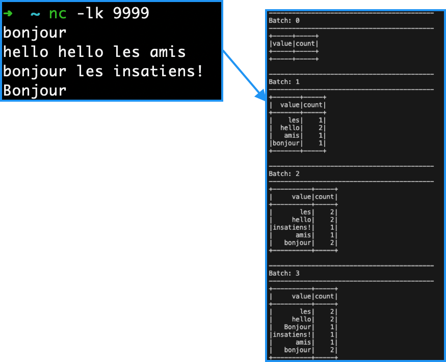

TP2 - Traitement par Lot et Streaming avec Spark¶

Télécharger PDF¶

Objectifs du TP¶
Utilisation de Spark pour réaliser des traitements par lot et des traitements en streaming.
Outils et Versions¶
- Apache Hadoop Version: 2.7.2
- Apache Spark Version: 2.2.1
- Docker Version 17.09.1
- IntelliJ IDEA Version Ultimate 2016.1 (ou tout autre IDE de votre choix)
- Java Version 1.8
- Unix-like ou Unix-based Systems (Divers Linux et MacOS)
Spark¶
Présentation¶
Spark est un système de traitement rapide et parallèle. Il fournit des APIs de haut niveau en Java, Scala, Python et R, et un moteur optimisé qui supporte l'exécution des graphes. Il supporte également un ensemble d'outils de haut niveau tels que Spark SQL pour le support du traitement de données structurées, MLlib pour l'apprentissage des données, GraphX pour le traitement des graphes, et Spark Streaming pour le traitment des données en streaming.

Spark et Hadoop¶
Spark peut s'exécuter sur plusieurs plateformes: Hadoop, Mesos, en standalone ou sur le cloud. Il peut également accéder diverses sources de données, comme HDFS, Cassandra, HBase et S3.
Dans ce TP, nous allons exécuter Spark sur Hadoop YARN. YARN s'occupera ainsi de la gestion des ressources pour le déclenchement et l'exécution des Jobs Spark.
Installation¶
Nous avons procédé à l'installation de Spark sur le cluster Hadoop utilisé dans le TP1. Voici les étapes nécessaires pour le lancer:
- Cloner le repo github contenant les fichiers nécessaires pour le lancement des contenaires et leur configuration:
git clone https://github.com/liliasfaxi/hadoop-cluster-docker
- Construire l'image Docker à partir du fichier Dockerfile fourni.
cd hadoop-cluster-docker ./build-image.sh - Démarrer les trois contenaires:
sudo ./start-container.sh
Le résultat de cette exécution sera le suivant:
start hadoop-master container... start hadoop-slave1 container... start hadoop-slave2 container... root@hadoop-master:~#
- Lancer les démons yarn et hdfs en lançant:
./start-hadoop.sh
Vous pourrez vérifier que tous les démons sont lancés en tapant: jps. Un résultat semblable au suivant pourra être visible:
880 Jps 257 NameNode 613 ResourceManager 456 SecondaryNameNode
La même opération sur les noeuds esclaves (auquels vous accédez à partir de votre machine hôte en tapant docker exec -it hadoop-slave1 bash) devrait donner:
176 NodeManager 65 DataNode 311 Jps
Test de Spark avec Spark-Shell¶
Dans le but de tester l'exécution de spark, commencer par créer un fichier file1.txt dans votre noeud master, contenant le texte suivant:
Hello Spark Wordcount! Hello Hadoop Also :)
Charger ensuite ce fichier dans HDFS:
hadoop fs -put file1.txt
Pour vérifier que spark est bien installé, taper la commande suivante:
spark-shell
Vous devriez avoir un résultat semblable au suivant:
Vous pourrez tester spark avec un code scala simple comme suit (à exécuter ligne par ligne):
val lines = sc.textFile("file1.txt") val words = lines.flatMap(_.split("\\s+")) val wc = words.map(w => (w, 1)).reduceByKey(_ + _) wc.saveAsTextFile("file1.count")
Ce code vient de (1) charger le fichier file1.txt de HDFS, (2) séparer les mots selon les caractères d'espacement, (3) appliquer un map sur les mots obtenus qui produit le couple (<mot>, 1), puis un reduce qui permet de faire la somme des 1 des mots identiques.
Pour afficher le résultat, sortir de spark-shell en cliquant sur Ctrl-C. Télécharger ensuite le répertoire file1.count créé dans HDFS comme suit:
hadoop fs -get file1.count
Le contenu des deux fichiers part-00000 et part-00001 ressemble à ce qui suit:

L'API de Spark¶
A un haut niveau d'abstraction, chaque application Spark consiste en un programme driver qui exécute la fonction main de l'utilisateur et lance plusieurs opérations parallèles sur le cluster. L'abstraction principale fournie par Spark est un RDD (Resilient Distributed Dataset), qui représente une collection d'éléments partitionnés à travers les noeuds du cluster, et sur lesquelles on peut opérer en parallèle. Les RDDs sont créés à partir d'un fichier dans HDFS par exemple, puis le transforment. Les utilisateurs peuvent demander à Spark de sauvegarder un RDD en mémoire, lui permettant ainsi d'être réutilisé efficacement à travers plusieurs opérations parallèles.
Les RDDs supportent deux types d'opérations:
- les transformations, qui permettent de créer un nouveau Dataset à partir d'un Dataset existant
- les actions, qui retournent une valeur au programme driver arès avoir exécuté un calcul sur le Dataset.
Par exemple, un map est une transformation qui passe chaque élément du dataset via une fontion, et retourne un nouvel RDD représentant les résultats. Un reduce est une action qui agrège tous les éléments du RDD en utilisant une certaine fonction et retourne le résultat final au programme.
Toutes les transformations dans Spark sont lazy, car elles ne calculent pas le résultat immédiatement. Elles se souviennent des transformations appliquées à un dataset de base (par ex. un fichier). Les transformations ne sont calculées que quand une action nécessite qu'un résultat soit retourné au programme principal. Cela permet à Spark de s'exécuter plus efficacement.
Exemple¶
L'exemple que nous allons présenter ici par étapes permet de relever les mots les plus fréquents dans un fichier. Pour cela, le code suivant est utilisé:
//Etape 1 - Créer un RDD à partir d'un fichier texte de Hadoop val docs = spark.textFile("/docs")

//Etape 2 - Convertir les lignes en minuscule val lower = docs.map(line => line.toLowerCase)

//Etape 3 - Séparer les lignes en mots val words = lower.flatMap(line => line.split("\\s+"))

//Etape 4 - produire les tuples (mot, 1) val counts = words.map(word => (word,1))

//Etape 5 - Compter tous les mots val freq = counts.reduceByKey(_ + _)

//Etape 6 - Inverser les tuples (transformation avec swap) freq.map(_.swap)

//Etape 6 - Inverser les tuples (action de sélection des n premiers) val top = freq.map(_swap).top(N)

Spark Batch en Java¶
Préparation de l'environnement et Code¶
Nous allons dans cette partie créer un projet Spark Batch en Java (un simple WordCount), le charger sur le cluster et lancer le job.
- Créer un projet Maven avec IntelliJ IDEA, en utilisant la config suivante:
<groupId>spark.batch</groupId> <artifactId>wordcount</artifactId> <version>1</version>
- Rajouter dans le fichier pom les dépendances nécessaires, et indiquer la version du compilateur Java:
<properties> <maven.compiler.source>1.8</maven.compiler.source> <maven.compiler.target>1.8</maven.compiler.target> </properties> <dependencies> <dependency> <groupId>org.apache.spark</groupId> <artifactId>spark-core_2.11</artifactId> <version>2.1.0</version> </dependency> <dependency> <groupId>org.slf4j</groupId> <artifactId>slf4j-log4j12</artifactId> <version>1.7.22</version> </dependency> </dependencies>
- Sous le répertoire java, créer un package que vous appellerez tn.insat.tp21, et dedans, une classe appelée WordCountTask.
-
Écrire le code suivant dans WordCountTask:
public class WordCountTask { private static final Logger LOGGER = LoggerFactory.getLogger(WordCountTask.class); public static void main(String[] args) { checkArgument(args.length > 1, "Please provide the path of input file and output dir as parameters."); new WordCountTask().run(args[0], args[1]); } public void run(String inputFilePath, String outputDir) { String master = "local[*]"; SparkConf conf = new SparkConf() .setAppName(WordCountTask.class.getName()) .setMaster(master); JavaSparkContext sc = new JavaSparkContext(conf); JavaRDD<String> textFile = sc.textFile(inputFilePath); JavaPairRDD<String, Integer> counts = textFile .flatMap(s -> Arrays.asList(s.split(" ")).iterator()) .mapToPair(word -> new Tuple2<>(word, 1)) .reduceByKey((a, b) -> a + b); counts.saveAsTextFile(outputDir); } }
La première chose à faire dans un programme Spark est de créer un objet JavaSparkContext, qui indique à Spark comment accéder à un cluster. Pour créer ce contexte, vous aurez besoin de construire un objet SparkConf qui contient toutes les informations sur l'application.- appName: est de nom de l'application
- master est une URL d'un cluster Spark, Mesos ou YARN, ou bien une chaîne spéciale local pour lancer le job en mode local.
Warning
Nous avons indiqué ici que notre master est local pour les besoins du test, mais plus tard, en le packageant pour le cluster, nous allons enlever cette indication. Il est en effet déconseillé de la hard-coder dans le programme, il faudrait plutôt l'indiquer comme option de commande à chaque fois que nous lançons le job.
Le reste du code de l'application est la version en Java de l'exemple en scala que nous avions fait avec spark-shell.
Test du code en local¶
Pour tester le code sur votre machine, procéder aux étapes suivantes:
- Insérer un fichier texte de votre choix (par exemple le fameux loremipsum.txt) dans le répertoire src/main/resources.
- Créer une nouvelle configuration de type "Application" (Run->Edit Configurations) que vous appellerez WordCountTask, et définir les arguments suivants (fichier de départ et répertoire d'arrivée) comme Program arguments:
src/main/resources/loremipsum.txt src/main/resources/out
- Cliquer sur OK, et lancer la configuration. Si tout se passe bien, un répertoire out sera créé sous resources, qui contient deux fichiers: part-00000, part-00001.

Lancement du code sur le cluster¶
Pour exécuter le code sur le cluster, modifier comme indiqué les lignes en jaune dans ce qui suit:
public class WordCountTask { private static final Logger LOGGER = LoggerFactory.getLogger(WordCountTask.class); public static void main(String[] args) { checkArgument(args.length > 1, "Please provide the path of input file and output dir as parameters."); new WordCountTask().run(args[0], args[1]); } public void run(String inputFilePath, String outputDir) { SparkConf conf = new SparkConf() .setAppName(WordCountTask.class.getName()); JavaSparkContext sc = new JavaSparkContext(conf); JavaRDD<String> textFile = sc.textFile(inputFilePath); JavaPairRDD<String, Integer> counts = textFile .flatMap(s -> Arrays.asList(s.split("\t")).iterator()) .mapToPair(word -> new Tuple2<>(word, 1)) .reduceByKey((a, b) -> a + b); counts.saveAsTextFile(outputDir); } }
Lancer ensuite une configuration de type Maven, avec les commandes package install. Un fichier intitulé worcount-1.jar sera créé sous le répertoire target.
Nous allons maintenant copier ce fichier dans docker. Pour cela, naviguer vers le répertoire du projet avec votre terminal (ou plus simplement utiliser le terminal dans IntelliJ), et taper la commande suivante:
docker cp target/wordcount-1 hadoop-master:/root/wordcount-1.jar
Revenir à votre contenaire master, et lancer un job Spark en utilisant ce fichier jar généré, avec la commande spark-submit, un script utilisé pour lancer des applications spark sur un cluster.
spark-submit --class tn.insat.tp21.WordCountTask
--master local
--driver-memory 4g --executor-memory 2g --executor-cores 1
wordcount.jar
input/purchases.txt
output
- Nous allons lancer le job en mode local, pour commencer.
- Le fichier en entrée est le fichier purchases.txt (que vous trouverez déjà chargé sur le contenaire master), et le résultat sera stocké dans un répertoire output.
Attention
Vérifiez bien que le fichier purchases existe dans le répertoire input de HDFS, et que le répertoire output n'existe pas!
Si tout se passe bien, vous devriez trouver, dans le répertoire output, deux fichiers part-00000 et part-00001, qui ressemblent à ce qui suit:

Nous allons maintenant tester le comportement de spark-submit si on l'exécute en mode cluster sur YARN. Pour cela, exécuter le code suivant:
spark-submit --class tn.insat.tp21.WordCountTask
--master yarn
--deploy-mode cluster
--driver-memory 4g --executor-memory 2g --executor-cores 1
wordcount.jar
input/purchases.txt
output2
- En lançant le job sur Yarn, deux modes de déploiement sont possibles:
- Mode cluster: où tout le job s'exécute dans le cluster, c'est à dire les Spark Executors (qui exécutent les vraies tâches) et le Spark Driver (qui ordonnance les Executors). Ce dernier sera encapsulé dans un YARN Application Master.
- Mode client : où Spark Driver s'exécute sur la machine cliente (tel que votre propre ordinateur portable). Si votre machine s'éteint, le job s'arrête. Ce mode est approprié pour les jobs interactifs.
Si tout se passe bien, vous devriez obtenir un répertoire output2 dans HDFS avec les fichiers usuels.
Erreur
En cas d'erreur ou d'interruption du job sur Yarn, vous pourrez consulter les fichiers logs pour chercher le message d'erreur (le message affiché sur la console n'est pas assez explicite). Pour cela, sur votre navigateur, aller à l'adresse: http://localhost:8041/logs/userlogset suivez toujours les derniers liens jusqu'à stderr.
Spark Streaming¶
Spark est connu pour supporter également le traitement des données en streaming. Les données peuvent être lues à partir de plusieurs sources tel que Kafka, Flume, Kinesis ou des sockets TCP, et peuvent être traitées en utilisant des algorithmes complexes. Ensuite, les données traitées peuvent être stockées sur des systèmes de fichiers, des bases de données ou des dashboards. Il est même possible de réaliser des algorithmes de machine learning et du traitement de graphes sur les flux de données.

En interne, il fonctionne comme suit. Spark Streaming reçoit des données en streaming et les divise en micro-batches, qui sont ensuite calculés par le moteur de spark pour générer le flux final de résultats.
Environnement et Code¶
Nous allons commencer par tester le streaming en local, comme d'habitude. Pour cela:
- Commencer par créer un nouveau projet Maven, avec le fichier pom suivant:
<?xml version="1.0" encoding="UTF-8"?> <project xmlns="http://maven.apache.org/POM/4.0.0" xmlns:xsi="http://www.w3.org/2001/XMLSchema-instance" xsi:schemaLocation="http://maven.apache.org/POM/4.0.0 http://maven.apache.org/xsd/maven-4.0.0.xsd"> <modelVersion>4.0.0</modelVersion> <groupId>spark.streaming</groupId> <artifactId>stream</artifactId> <version>1</version> <dependencies> <dependency> <groupId>org.apache.spark</groupId> <artifactId>spark-core_2.11</artifactId> <version>2.2.1</version> </dependency> <dependency> <groupId>org.apache.spark</groupId> <artifactId>spark-streaming_2.11</artifactId> <version>2.2.1</version> </dependency> </dependencies> <build> <plugins> <plugin> <groupId>org.apache.maven.plugins</groupId> <artifactId>maven-compiler-plugin</artifactId> <version>3.1</version> <configuration> <source>1.8</source> <target>1.8</target> </configuration> </plugin> </plugins> </build> </project>
- Créer une classe tn.insat.tp22.Stream avec le code suivant:
public class Stream { public static void main(String[] args) throws InterruptedException { SparkConf conf = new SparkConf() .setAppName("NetworkWordCount") .setMaster("local"); JavaStreamingContext jssc = new JavaStreamingContext(conf, Durations.seconds(1)); JavaReceiverInputDStream<String> lines = jssc.socketTextStream("localhost", 9999); JavaDStream<String> words = lines.flatMap(x -> Arrays.asList(x.split(" ")).iterator()); JavaPairDStream<String, Integer> pairs = words.mapToPair(s -> new Tuple2<>(s, 1)); JavaPairDStream<String, Integer> wordCounts = pairs.reduceByKey((i1, i2) -> i1 + i2); wordCounts.print(); jssc.start(); jssc.awaitTermination(); } }
Ce code permet de calculer le nombre de mots dans un stream de données toutes les secondes.
Test du code en Local¶
Le stream ici sera diffusé par une petite commande utilitaire qui se trouve dans la majorité des systèmes Unix-like.
- Ouvrir un terminal, et taper la commande suivante pour créer le stream:
nc -lk 9999
Vous pourrez alors taper les entrées de votre choix. - Exécuter votre classe Stream. Vous verrez défiler sur votre console des lignes en continu: l'application est en écoute sur localhost:9999.
A chaque fois que vous entrez quelque chose sur le terminal, l'application l'intercepte, et l'affichage sur l'écran de la console change, comme suit:

Ensuite, pour voir le résultat final du comptage, arrêter l'exécution en cliquant sur le carré rouge, puis observer la console, vous verrez un affichage qui ressemble à ceci:

Lancement du code sur le cluster¶
Pour lancer le code précédent sur le cluster, il faudra d'abord faire des petites modifications:
Attention
Veillez à mettre l'IP de votre machine locale (sur laquelle vous allez lancer le flux avec nc) à la place de <votre-ip>. Vous pourrez trouver votre IP avec la commande ifconfig.
- Lancer un
mvn package installpour créer le fichier jar. - Copier le fichier jar sur le contenaire hadoop.
- Lancer la commande suivante:
spark-submit --class tn.insat.tp22.Stream
--master local
--driver-memory 4g --executor-memory 2g --executor-cores 1
stream-1.jar
Observer le résultat.
Homework¶
Vous allez, pour ce cours, réaliser un projet en binôme, qui consiste en la construction d'une architecture Big Data supportant le streaming, le batch processing, et le dashboarding temps réel. Pour la séance prochaine, vous allez réfléchir au type de traitement que vous voulez réaliser (le flux de données en entrée, et les résultats en sortie). Vous allez commencer par utiliser Spark pour réaliser ces traitements, avec un stockage sur HDFS au besoin.